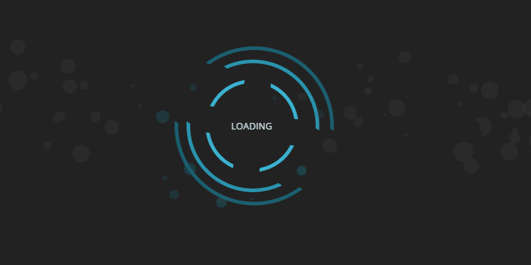

<div class="homeComponent" >
    <div style="padding:2%;">
        <div>
            <div>
                <h2>  Before The Demo  </h2>
            </div>
            <div>
                <p style="padding-top:10px"> There is some crucial information to know before you view the demo.
                    The video below provides instructions on which login you should use
                    as well as functionality of File Man that may be unclear. 
                </p>
            </div>
            <div style="display:flex; justify-content: center; padding-top:30px">
                
            </div>
        </div>
    </div>
</div>